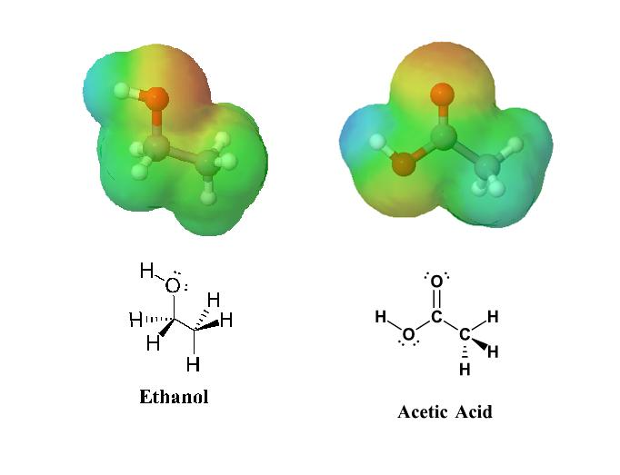

หมู่ฟังก์ชันและสมบัติของสารอินทรีย์
หมู่ฟังก์ชัน (Functional Group) คือกลุ่มอะตอมหรือพันธะที่อยู่ภายในโมเลกุลของสารอินทรีย์ ซึ่งมีผลต่อสมบัติและการเกิดปฏิกิริยาเคมีของสารนั้น สารประกอบอินทรีย์ที่มีหมู่ฟังก์ชันแตกต่างกันอาจมีสมบัติแตกต่างกัน แม้ว่าจะมีจำนวนอะตอมคาร์บอนใกล้เคียงกันก็ตาม การศึกษาหมู่ฟังก์ชันจึงช่วยให้สามารถจำแนกประเภทของสารอินทรีย์และเข้าใจการเกิดปฏิกิริยาได้ง่ายขึ้น
ตัวอย่างหมู่ฟังก์ชันที่สำคัญ ได้แก่
1. หมู่ไฮดรอกซิล (-OH) พบในแอลกอฮอล์ เช่น เอทานอล (C₂H₅OH) ซึ่งเป็นของเหลวที่สามารถนำไปใช้เป็นตัวทำละลายและเชื้อเพลิงได้
2. หมู่คาร์บอกซิล (-COOH) พบในกรดคาร์บอกซิลิก เช่น กรดอะซิติก (CH₃COOH) ซึ่งเป็นองค์ประกอบสำคัญของน้ำส้มสายชูและมีสมบัติเป็นกรด
3. หมู่อะมิโน (-NH₂) พบในเอมีนและสารประกอบอินทรีย์หลายชนิด รวมถึงเป็นส่วนหนึ่งของโครงสร้างกรดอะมิโน ซึ่งเป็นหน่วยพื้นฐานของโปรตีน
4. หมู่คาร์บอนิล (C=O) พบในสารประกอบประเภทแอลดีไฮด์และคีโตน มีผลต่อสมบัติและการเกิดปฏิกิริยาของสาร
หมู่ฟังก์ชันมีผลต่อจุดเดือด จุดหลอมเหลว การละลายน้ำ กลิ่น และความสามารถในการเกิดปฏิกิริยาเคมี การทำความเข้าใจหมู่ฟังก์ชันจึงมีความสำคัญต่อการเรียนเคมีอินทรีย์และการนำความรู้ไปใช้ในอุตสาหกรรมยา อาหาร และผลิตภัณฑ์ต่าง ๆ